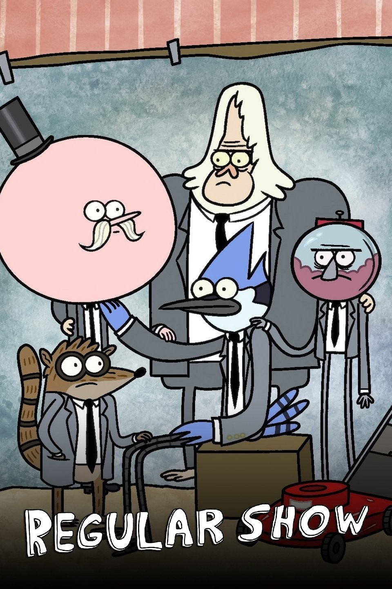
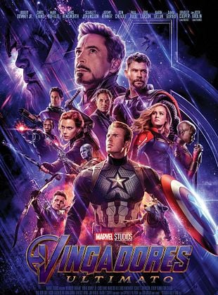

Apenas um Show acompanha Mordecai (um gaio-azul) e Rigby (um guaxinim), dois amigos de 23 anos que trabalham como jardineiros em um parque. Eles odeiam trabalhar e tentam de tudo para fugir das tarefas. Tarefas simples viram confusões surreais, bizarras e sobrenaturais

Vingadores: Ultimato mostra os heróis sobreviventes cinco anos após o estalar de dedos de Thanos. Eles criam um plano de viagem no tempo para recuperar as Joias do Infinito do passado, trazem todos de volta, derrotam Thanos em uma batalha épica ao custo da vida do Homem de Ferro, e encerram a saga

Em Vingadores: Guerra Infinita, o poderoso titã Thanos viaja pelo universo para reunir todas as seis Joias do Infinito. O seu objetivo é eliminar metade de toda a vida existente para equilibrar o cosmos. Os heróis da Terra e os Guardiões da Galáxia unem forças para tentar detê-lo antes que seja tarde demais.

Em Vingadores: Era de Ultron (2015), Tony Stark cria uma inteligência artificial para proteger a Terra. O plano falha quando Ultron decide que a humanidade é o maior perigo ao planeta e tenta destruí-la. Os Vingadores se unem para derrotar o robô, criam o herói Visão e vencem a batalha final em Sokovia

Em Os Vingadores (2012), o deus trapaceiro Loki rouba o Tesseract (Cubo Cósmico) para dominar a Terra. Para detê-lo, o diretor da S.H.I.E.L.D., Nick Fury, convoca o Homem de Ferro, o Capitão América, Thor, o Hulk, a Viúva Negra e o Gavião Arqueiro, formando a primeira união dos heróis mais poderosos do planeta.